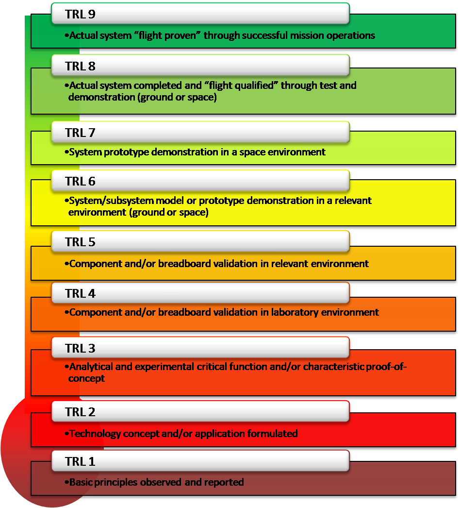

Feedback Summary
Unfortunately, I did not receive any feedback for Project 1. I will provide what I believe my CMMI maturity and NASA TRL assessment are for Project 1, drawing from my understanding of the project's development process and technical readiness level.
CMMI Maturity and NASA TRL Assessment
Below are my assessments based on my understanding:
- CMMI Level 2: Managed - It demonstrates that processes are planned and executed in response to specific needs, such as addressing cybersecurity threats in social media. There's evidence of project management and process discipline to achieve the set goals, although it may not be optimized across all areas.
- NASA TRL 4: Technology validated in lab - Based on my evaluation, my project seems to align with NASA TRL 4, indicating that the technology has been validated in a lab environment. This assessment is supported by successful testing and functionality of the implementations, which have been operational in a local testing environment.


Current US-CERT 3-2-1 Data Backup Status
Currently, my data backup strategy for the CSC 543 portfolio is quite basic. All materials related to this class are saved in a folder labeled "CSC543" which is stored solely on my MacBook Pro. This approach can potentially present significant risks, such as data loss due to hardware failure, accidental deletion, or potential cybersecurity threats that could compromise the integrity of my laptop.
Paths to Optimizing US-CERT 3-2-1 Data Backup Status
To optimize my CSC 543 portfolio, I plan to create at least two additional copies of the data so that three copies exist. I will then save them on different media types to avoid a single point of failure. The data will be stored on an external hard drive and in the cloud.
- External Hard Drive
- Google Drive

- iCloud

- Regular Backup Schedule: Set up a regular backup schedule to automatically sync files between my MacBook, the external hard drive, and the cloud service. This will help maintain current backups across all platforms.
NIST CSF2 PR.DS Compliance
Data Security (PR.DS)
-
PR.DS-01: Data-at-Rest
Given that the data in my CSC 543 portfolio does not contain sensitive data, extensive encryption is not currently employed. However, access to the data at rest requires a password to my computer, ensuring basic security measures are in place to protect against unauthorized access.
-
PR.DS-02: Data-in-Transit
Data in transit is secured using SFTP via Filezilla to the class server, which is accessible only with my username and password. I am sure that the data on the class server is encrypted and securely maintained.
-
PR.DS-10: Data-in-Use
While my CSC 543 portfolio does not include sensitive data requiring encrypted protection while in use, security measures are in place to ensure the integrity and confidentiality of data. This includes operating system security and application-level permissions, which require user authentication to access and manipulate data.
-
PR.DS-11: Data Backups
Currently, systematic testing of backup integrity and recoverability is not regularly performed. To improve this, I plan to implement monthly backup tests. This will involve manually restoring a selection of files from the backup to verify their integrity and ensure that all data remains accessible and uncorrupted. Additionally, I will review the security settings of the backup storage to confirm that data protection measures like access controls are appropriately maintained.